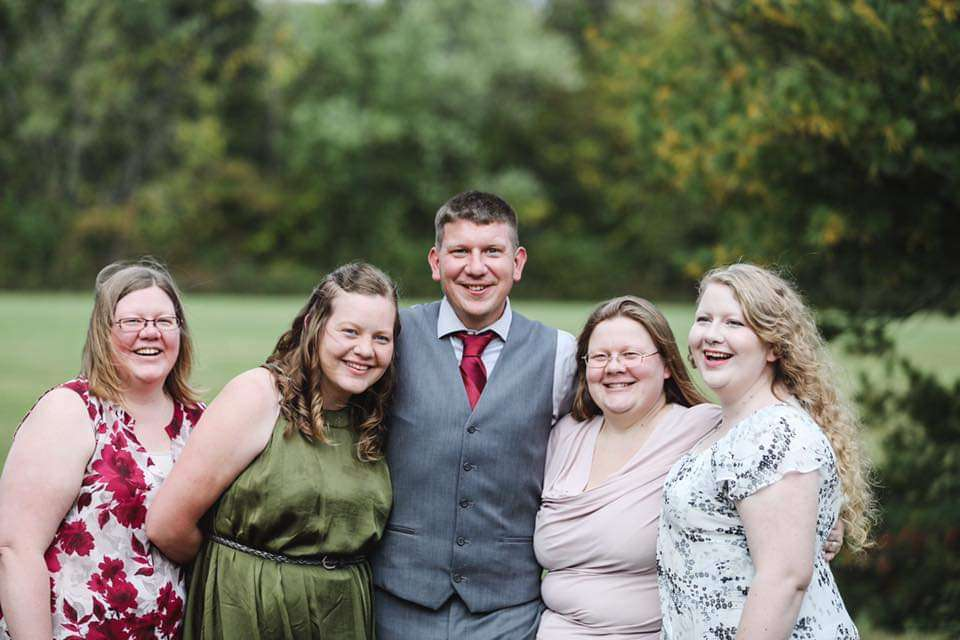
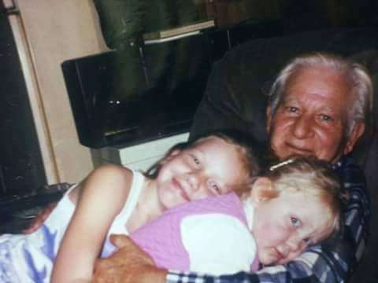
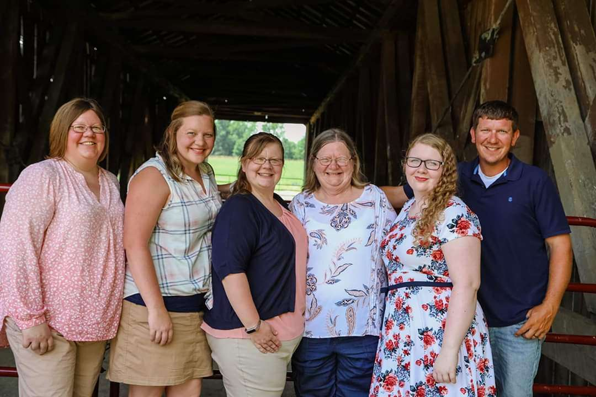

Age: 29
Location: Michigan
Rebecca Norris is a twenty-nine-year-old woman born and raised in the Ohio countryside along her three siblings. Although life with her father was difficult, she grew up admiring her mother for how hard she worked providing for their family. She also enjoyed visiting her grandparents often and fondly remembers tagging along with her grandfather as he tackled the daily chores. In high school, she enjoyed many activities such as marching band and her first job working at a haunted house. However, she considers her first real job to be the deli she worked at once she had grown up and moved to Kentucky. From there she worked at many different places: a nursing home, cleaning a bank, making sandwiches, packing car parts, childcare, and a hardware store! Eventually, she found herself in Michigan where she found her true home, and her true passion for piercing!
Although she loved working as a piercer, the company she began with turned out to be run by bad people. She could not stand watching owners allowing employees to be harassed and assaulted, so she left. Now she is enjoying her "housewife era" at home with Ryan, her boyfriend of four years. Her focus now is to get her driver's license and find a new shop to pierce at. She loved to help others express themselves through body modifications and is looking forward to returning to this job more than anything! Until then, she is happy to be able to cook and clean and enjoy her other hobbies such as baking, spending time with her cat Bean, and playing video games. Oh, and being obsessed with Nicholas Cage, of course.


